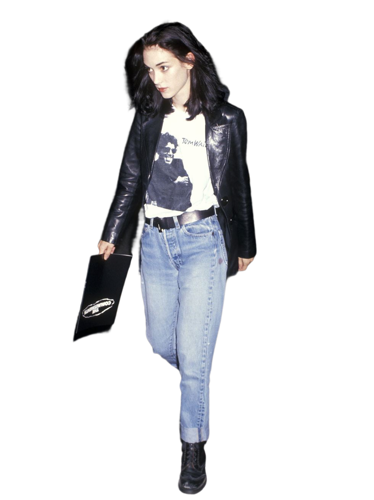

The sportswear looks of the eighties continued into the early nineties with biker shorts, leggings, Keds, and oversized sweatshirts continuing to be favorite choices for young women.

Then, fashion towards a more casual style of dressing and minimalism. The slip dress was the biggest fashion trend. The supermodels were replaced by the “heroin chic” models, a type of model epitomized by Kate Moss.
The three main subcultures of the 90s were Grunge fashion pioneered by Marc Jacobs and Alexander McQueen, the preppy style. In addition, women wore overalls, swirl patterns, leopard print, scrunchies, bandanas, crop tops, tie-dye…